Candidate List 20260712Last night — ZTF: 2,994 passed basic cuts (59 young) · LSST: 3,165 passed basic cuts (284 young)Previous Day Next Day
Section 1: New Sources (age<1d) Section 2: Old (1-5d) sources observed last nightplaceholder
Section 1: New Afterglow/FBOT Cands Last Night (1)
1. [LSST] 170657505435189325 (FBOT?) [Back to Top] [Fritz Alert] [Fritz Source] [Lasair]RA, Dec: 350.31424, -0.11942 23h21m15.42s, 0d-7m-9.90sGalactic (l, b): 80.49049, -55.37829 WARNING: 3.73 deg from ecliptic plane ext(g-r) = 0.044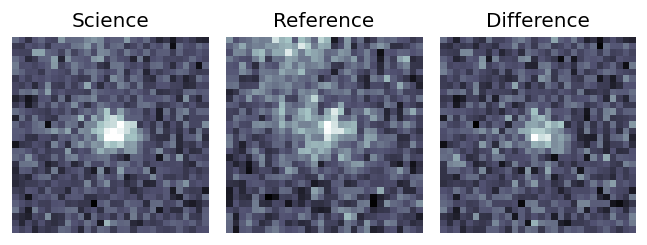
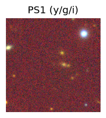
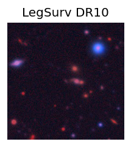
TESS: Sectors [42 70 92]
NED (10 arcsec):Found NED spec-z: z=0.68; peak abs mag = -24.84
PS1: 0 sources in 3 arcsec
LegacySurvey: 1 sources in 3 arcsec Closest: d = 0.22 arcsec, 209.9 deg (east of north) photoz=0.49 (68% bounds 0.43, 0.58), type=EXP peak abs mag = -23.91 (68% bounds -23.55, -24.34)
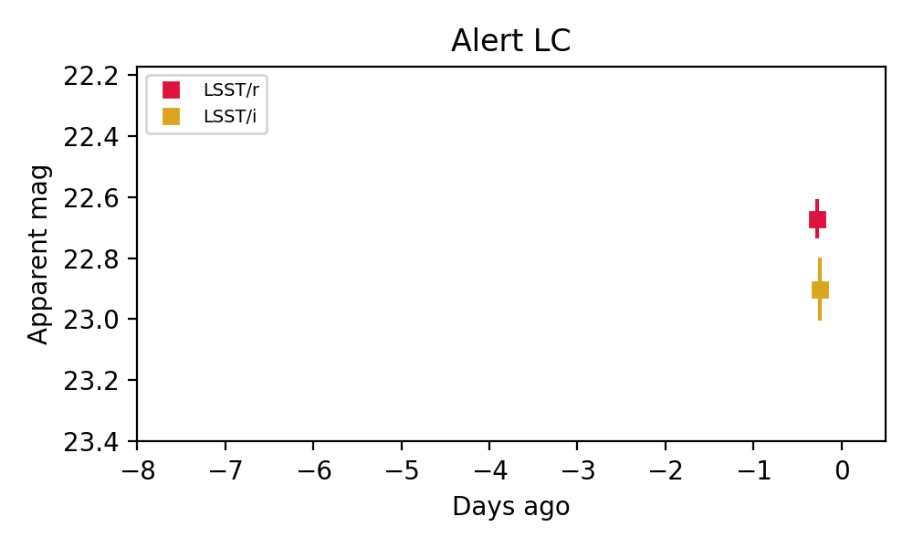
Extinction-corrected ri color:
From alerts: -0.25 +/- 0.12 mag
Rise Rate:
i: 0.41 mag/day
Fade Rate:
i: 0.0 mag/day
Section 2: Older Sources Observed Last Night (20)
0. [ZTF] ZTF26abfaduz (Afterglow?) [Back to Top] [Share] [Trigger Swift] [Fritz Alert] [Fritz Source] [Lasair]RA, Dec: 302.46044, 13.9636 20h 9m50.51s, 13d57m48.96sGalactic (l, b): 54.59927, -10.35275 ext(g-r) = 0.275


TESS: Sectors [54 81]
PS1: 0 sources in 3 arcsec
LegacySurvey: 0 sources in 3 arcsec

Extinction-corrected gr color:
From alerts: -0.2 +/- 0.14 mag
Extinction-corrected gi color:
From alerts: -0.49 +/- 0.16 mag
Extinction-corrected ri color:
From alerts: -0.29 +/- 0.12 mag
Rise Rate:
Fade Rate:
g: 0.22 mag/day
r: 0.2 mag/day
1. [ZTF] ZTF26abfftwf (Afterglow?) [Back to Top] [Share] [Trigger Swift] [Fritz Alert] [Fritz Source] [Lasair]RA, Dec: 332.96738, 0.10865 22h11m52.17s, 0d 6m31.13sGalactic (l, b): 61.6606, -42.99861 ext(g-r) = 0.065


TESS: Sectors [42 55 82 92]
NED (10 arcsec):Found NED spec-z: z=0.03; peak abs mag = -17.16
PS1: 0 sources in 3 arcsec
LegacySurvey: 1 sources in 3 arcsec Closest: d = 6.26 arcsec, 262.5 deg (east of north) photoz=1.82 (68% bounds 0.97, 2.61), type=PSF peak abs mag = -26.84 (68% bounds -25.17, -27.79)

Extinction-corrected gr color:
From alerts: 0.05 +/- 0.13 mag
Extinction-corrected gi color:
From alerts: -0.0 +/- 0.16 mag
Extinction-corrected ri color:
From alerts: -0.05 +/- 0.15 mag
Consistent with synchrotron, g-r>0!
Rise Rate:
g: 0.07 mag/day
r: 0.09 mag/day
i: 0.21 mag/day
Fade Rate:
i: 0.9 mag/day
2. [LSST] 170587111860207859 (Afterglow?) [Back to Top] [Fritz Alert] [Fritz Source] [Lasair]RA, Dec: 342.35483, -15.83622 22h49m25.16s, -15d-50m-10.40sGalactic (l, b): 48.39511, -59.55684 ext(g-r) = 0.055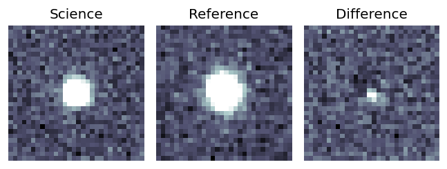
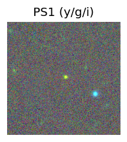
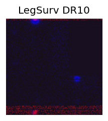
TESS: Sectors [ 2 29 42 69 70 92 96]
PS1: 0 sources in 3 arcsec
LegacySurvey: 0 sources in 3 arcsec
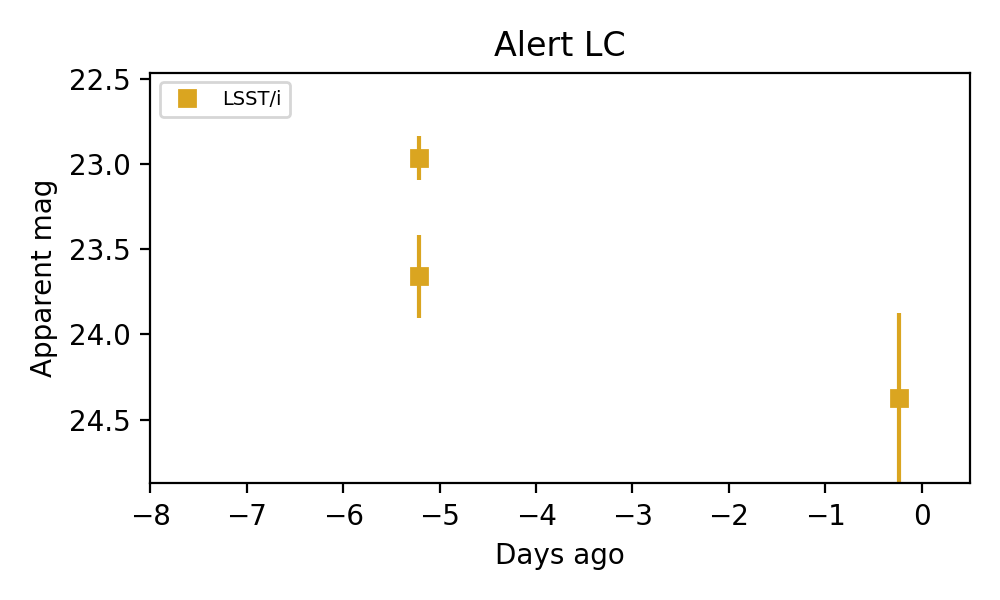
Rise Rate:
Fade Rate:
i: 0.25 mag/day
3. [LSST] 170635520886964497 (Afterglow?) [Back to Top] [Fritz Alert] [Fritz Source] [Lasair]RA, Dec: 325.1532, -18.39195 21h40m36.77s, -18d-23m-31.03sGalactic (l, b): 33.77809, -45.41252 WARNING: -4.23 deg from ecliptic plane ext(g-r) = 0.046


TESS: Sectors [ 92 116]
PS1: 0 sources in 3 arcsec
LegacySurvey: 0 sources in 3 arcsec

Extinction-corrected ri color:
From alerts: 0.94 +/- 0.04 mag
Extinction-corrected iz color:
From alerts: -0.87 +/- 0.05 mag
Consistent with synchrotron, g-r>0!
Rise Rate:
Fade Rate:
r: 0.23 mag/day
4. [ZTF] ZTF26abfjrvy (Afterglow?) [Back to Top] [Share] [Trigger Swift] [Fritz Alert] [Fritz Source] [Lasair]RA, Dec: 290.54785, -3.08857 19h22m11.48s, -3d-5m-18.84sGalactic (l, b): 33.68244, -8.24825 ext(g-r) = 0.539


TESS: Sectors [54 80]
PS1: 0 sources in 3 arcsec
LegacySurvey: 0 sources in 3 arcsec

Extinction-corrected gr color:
From alerts: -0.32 +/- 0.2 mag
Extinction-corrected gi color:
From alerts: -0.67 +/- 0.21 mag
Extinction-corrected ri color:
From alerts: -0.45 +/- 0.23 mag
Rise Rate:
g: 1.58 mag/day
Fade Rate:
g: 0.23 mag/day
r: 0.19 mag/day
i: 0.22 mag/day
5. [ZTF] ZTF26abfjtsz (Afterglow?) [Back to Top] [Share] [Trigger Swift] [Fritz Alert] [Fritz Source] [Lasair]RA, Dec: 292.07963, -4.13251 19h28m19.11s, -4d-7m-57.03sGalactic (l, b): 33.44032, -10.08392 ext(g-r) = 0.662


TESS: Sectors [54 81]
PS1: 0 sources in 3 arcsec
LegacySurvey: 0 sources in 3 arcsec

Extinction-corrected gr color:
From alerts: 0.2 +/- 0.32 mag
Extinction-corrected gi color:
From alerts: -0.18 +/- 0.21 mag
Extinction-corrected ri color:
From alerts: 0.11 +/- 0.22 mag
Consistent with synchrotron, g-r>0!
Rise Rate:
g: 0.58 mag/day
i: 0.69 mag/day
Fade Rate:
r: 0.12 mag/day
6. [ZTF] ZTF26abfokua (Afterglow?) [Back to Top] [Share] [Trigger Swift] [Fritz Alert] [Fritz Source] [Lasair]RA, Dec: 277.81507, -5.57553 18h31m15.62s, -5d-34m-31.91sGalactic (l, b): 25.66774, 1.92447 ext(g-r) = 1.728


TESS: Sectors 80
PS1: 0 sources in 3 arcsec
LegacySurvey: 0 sources in 3 arcsec

Extinction-corrected gr color:
From alerts: 0.19 +/- 0.05 mag
Extinction-corrected gi color:
From alerts: 0.32 +/- 0.04 mag
Extinction-corrected ri color:
From alerts: 0.13 +/- 0.04 mag
Consistent with synchrotron, g-r>0!
Rise Rate:
g: 2.98 mag/day
r: 1.31 mag/day
i: 2.41 mag/day
Fade Rate:
7. [ZTF] ZTF26abfzped (Afterglow?) [Back to Top] [Share] [Trigger Swift] [Fritz Alert] [Fritz Source] [Lasair]RA, Dec: 290.70863, 15.60847 19h22m50.07s, 15d36m30.50sGalactic (l, b): 50.35602, 0.3225 ext(g-r) = 10.13


TESS: Sectors [ 14 40 54 81 119]
PS1: 0 sources in 3 arcsec
LegacySurvey: 0 sources in 3 arcsec

Extinction-corrected gr color:
From alerts: -9.44 +/- 0.12 mag
Rise Rate:
g: 1.2 mag/day
r: 1.59 mag/day
Fade Rate:
g: 0.25 mag/day
r: 0.1 mag/day
8. [ZTF] ZTF26abfyqen (FBOT?) [Back to Top] [Share] [Trigger Swift] [Fritz Alert] [Fritz Source] [Lasair]RA, Dec: 186.32532, 12.61302 12h25m18.08s, 12d36m46.88sGalactic (l, b): 278.78824, 74.24665 ext(g-r) = 0.039


TESS: Sectors [23 49]
SDSS (<15 kpc):Found SDSS phot-z: z=0.23; peak abs mag = -20.07
PS1: 0 sources in 3 arcsec
LegacySurvey: 1 sources in 3 arcsec Closest: d = 1.61 arcsec, 6.6 deg (east of north) photoz=0.09 (68% bounds 0.05, 0.12), type=SER peak abs mag = -17.65 (68% bounds -16.43, -18.32)

Extinction-corrected gr color:
From alerts: -0.2 +/- 0.26 mag
Consistent with synchrotron, g-r>0!
Rise Rate:
g: 0.48 mag/day
r: 0.36 mag/day
Fade Rate:
9. [ZTF] ZTF26abgajnt (Afterglow?) [Back to Top] [Share] [Trigger Swift] [Fritz Alert] [Fritz Source] [Lasair]RA, Dec: 299.89117, 40.20143 19h59m33.88s, 40d12m5.15sGalactic (l, b): 75.74148, 5.46434 ext(g-r) = 0.358


TESS: Sectors [14 15 41 54 55 75 81 82]
PS1: 0 sources in 3 arcsec
LegacySurvey: 0 sources in 3 arcsec

Rise Rate:
g: 1.64 mag/day
Fade Rate:
g: 0.21 mag/day
10. [ZTF] ZTF26abgbmbs (Afterglow?) [Back to Top] [Share] [Trigger Swift] [Fritz Alert] [Fritz Source] [Lasair]RA, Dec: 330.83604, 39.74483 22h 3m20.65s, 39d44m41.37sGalactic (l, b): 91.11074, -12.52191 ext(g-r) = 0.217


TESS: Sectors [ 15 16 83 121]
PS1: 1 source in 3 arcsec Closest: d = 4.85 arcsec photoz=0.62+/-4.91 peak abs mag = -26.48
LegacySurvey: 0 sources in 3 arcsec

Extinction-corrected gr color:
From alerts: 0.02 +/- 0.18 mag
Consistent with synchrotron, g-r>0!
Rise Rate:
g: 1.46 mag/day
r: 3.07 mag/day
Fade Rate:
11. [ZTF] ZTF26abgjwnd (Afterglow?) [Back to Top] [Share] [Trigger Swift] [Fritz Alert] [Fritz Source] [Lasair]RA, Dec: 272.55643, 42.53344 18h10m13.54s, 42d32m0.37sGalactic (l, b): 69.69054, 25.18549 ext(g-r) = 0.056


TESS: Sectors [ 25 26 40 52 54 74 79 80 81 119]
SDSS (<15 kpc):Found SDSS phot-z: z=0.79; peak abs mag = -23.93
PS1: 0 sources in 3 arcsec
LegacySurvey: 1 sources in 3 arcsec Closest: d = 2.85 arcsec, 79.6 deg (east of north) photoz=0.61 (68% bounds 0.42, 0.85), type=PSF peak abs mag = -23.1 (68% bounds -22.14, -23.95)

Extinction-corrected gr color:
From alerts: -0.6 +/- 99 mag
Rise Rate:
g: 39.51 mag/day
Fade Rate:
g: 0.91 mag/day
12. [ZTF] ZTF26abgoemj (FBOT?) [Back to Top] [Share] [Trigger Swift] [Fritz Alert] [Fritz Source] [Lasair]RA, Dec: 155.24757, 37.41415 10h20m59.42s, 37d24m50.93sGalactic (l, b): 185.29361, 56.82591 ext(g-r) = 0.01


TESS: Sectors 21
SDSS (<15 kpc):Found SDSS phot-z: z=0.13; peak abs mag = -20.47
PS1: 0 sources in 3 arcsec
LegacySurvey: 1 sources in 3 arcsec Closest: d = 0.23 arcsec, 104.0 deg (east of north) photoz=0.1 (68% bounds 0.05, 0.17), type=EXP peak abs mag = -19.71 (68% bounds -18.12, -21.0)

Rise Rate:
r: 0.95 mag/day
Fade Rate:
13. [ZTF] ZTF26abgogjy (Afterglow?) [Back to Top] [Share] [Trigger Swift] [Fritz Alert] [Fritz Source] [Lasair]RA, Dec: 178.00616, 25.74839 11h52m1.48s, 25d44m54.21sGalactic (l, b): 215.50029, 76.63668 ext(g-r) = 0.021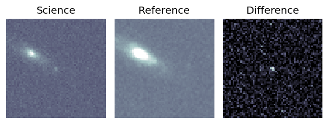
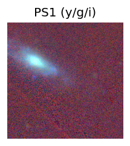
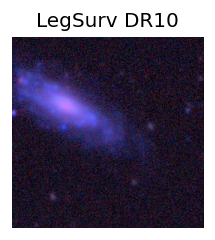
TESS: Sectors [22 49]
NED (10 arcsec):Found NED spec-z: z=0.02; peak abs mag = -15.12
PS1: 0 sources in 3 arcsec
LegacySurvey: 1 sources in 3 arcsec Closest: d = 0.41 arcsec, 218.1 deg (east of north) photoz=0.02 (68% bounds 0.01, 0.03), type=REX peak abs mag = -15.27 (68% bounds -14.5, -16.4)
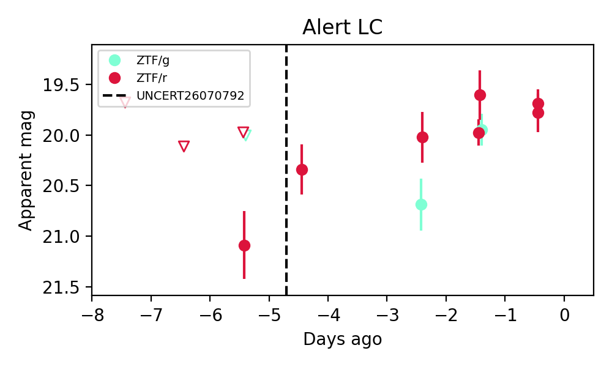
Extinction-corrected gr color:
From alerts: 0.03 +/- 0.19 mag
Consistent with synchrotron, g-r>0!
Rise Rate:
g: 0.72 mag/day
r: 0.21 mag/day
Fade Rate:
14. [ZTF] ZTF26abgoojc (FBOT?) [Back to Top] [Share] [Trigger Swift] [Fritz Alert] [Fritz Source] [Lasair]RA, Dec: 244.82993, 19.26286 16h19m19.18s, 19d15m46.30sGalactic (l, b): 35.12066, 41.91497 ext(g-r) = 0.058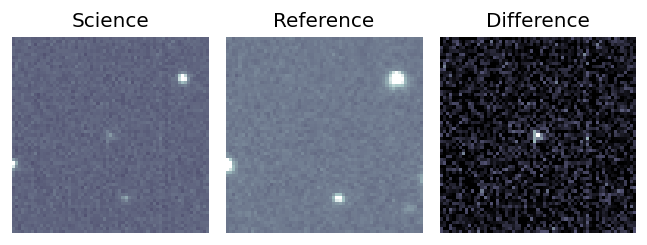
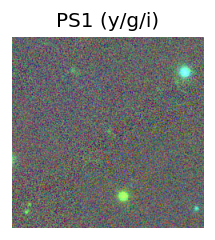
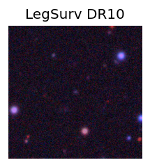
TESS: Sectors [ 25 51 52 78 79 117]
SDSS (<15 kpc):Found SDSS phot-z: z=0.52; peak abs mag = -22.51
PS1: 0 sources in 3 arcsec
LegacySurvey: 1 sources in 3 arcsec Closest: d = 0.23 arcsec, 243.8 deg (east of north) photoz=0.42 (68% bounds 0.24, 0.71), type=EXP peak abs mag = -21.77 (68% bounds -20.39, -23.16)
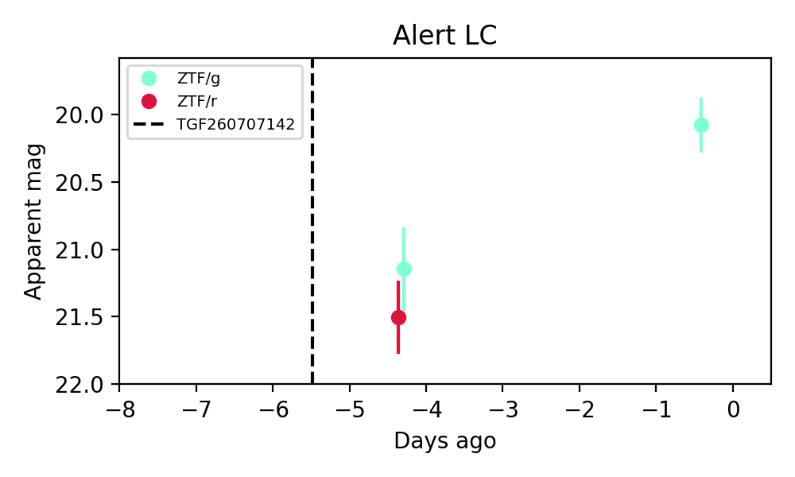
Extinction-corrected gr color:
From alerts: -0.41 +/- 0.41 mag
Rise Rate:
g: 0.28 mag/day
Fade Rate:
15. [ZTF] ZTF26abgpdin (FBOT?) [Back to Top] [Share] [Trigger Swift] [Fritz Alert] [Fritz Source] [Lasair]RA, Dec: 273.93844, -10.03731 18h15m45.23s, -10d-2m-14.31sGalactic (l, b): 19.92301, 3.23479 ext(g-r) = 1.352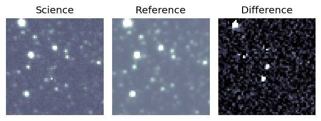
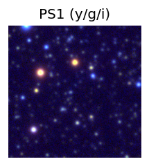

TESS: Sectors [ 80 118]
PS1: 1 source in 3 arcsec Closest: d = 2.14 arcsec photoz=0.42+/-0.16 peak abs mag = -25.12
LegacySurvey: 0 sources in 3 arcsec
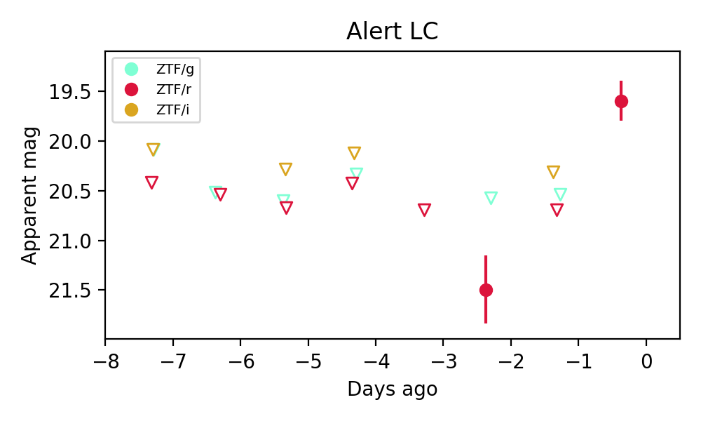
Extinction-corrected gr color:
From alerts: -2.27 +/- 99 mag
Rise Rate:
r: 1.16 mag/day
Fade Rate:
16. [ZTF] ZTF26abgqalh (Afterglow?) [Back to Top] [Share] [Trigger Swift] [Fritz Alert] [Fritz Source] [Lasair]RA, Dec: 294.59506, 10.58821 19h38m22.81s, 10d35m17.54sGalactic (l, b): 47.7551, -5.40244 ext(g-r) = 0.598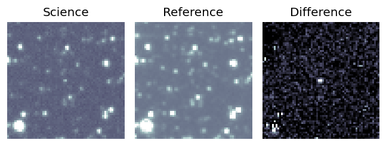
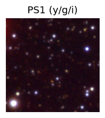

TESS: Sectors [54 81]
PS1: 0 sources in 3 arcsec
LegacySurvey: 0 sources in 3 arcsec
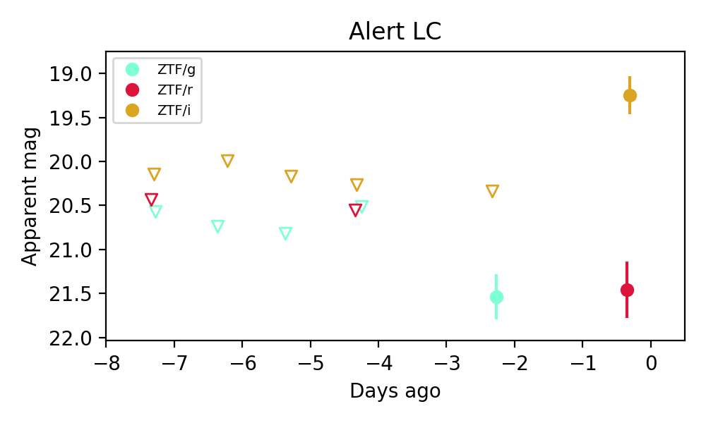
Extinction-corrected gi color:
From alerts: 0.28 +/- 99 mag
Extinction-corrected ri color:
From alerts: 1.89 +/- 0.39 mag
Consistent with synchrotron, g-r>0!
Rise Rate:
i: 0.54 mag/day
Fade Rate:
17. [ZTF] ZTF26abgqorx (FBOT?) [Back to Top] [Share] [Trigger Swift] [Fritz Alert] [Fritz Source] [Lasair]RA, Dec: 278.1707, -11.99474 18h32m40.97s, -11d-59m-41.05sGalactic (l, b): 20.13592, -1.35237 ext(g-r) = 3.334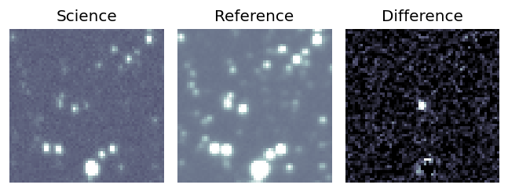
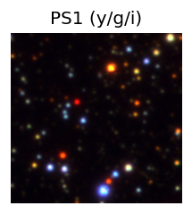

TESS: Sectors [ 80 92 118]
PS1: 1 source in 3 arcsec Closest: d = 0.96 arcsec photoz=0.49+/-0.03 peak abs mag = -33.78
LegacySurvey: 0 sources in 3 arcsec
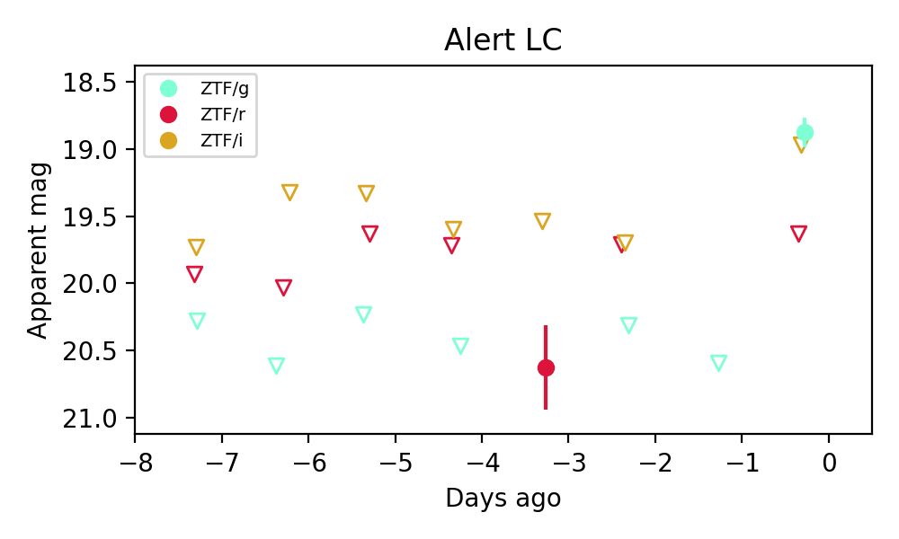
Extinction-corrected gr color:
From alerts: -4.08 +/- 99 mag
Extinction-corrected gi color:
From alerts: -5.23 +/- 99 mag
Extinction-corrected ri color:
From alerts: -0.72 +/- 99 mag
Rise Rate:
g: 1.72 mag/day
Fade Rate:
18. [LSST] 170653052007088174 (Afterglow?) [Back to Top] [Fritz Alert] [Fritz Source] [Lasair]RA, Dec: 326.0147, -10.77629 21h44m3.53s, -10d-46m-34.63sGalactic (l, b): 43.98405, -43.09844 WARNING: 2.69 deg from ecliptic plane ext(g-r) = 0.068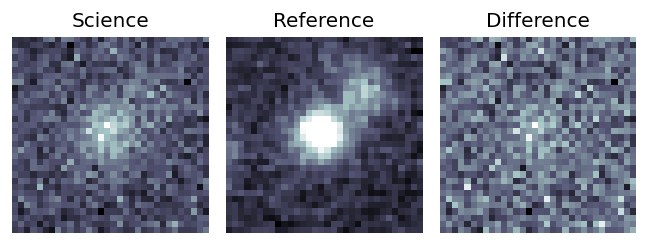
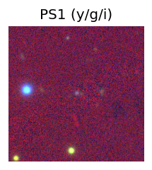
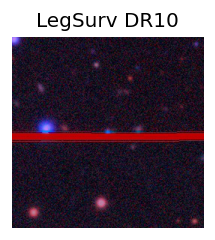
TESS: Sectors [ 92 116]
PS1: 0 sources in 3 arcsec
LegacySurvey: 1 sources in 3 arcsec Closest: d = 0.07 arcsec, 186.3 deg (east of north) photoz=1.35 (68% bounds 0.82, 1.93), type=PSF peak abs mag = -22.33 (68% bounds -21.0, -23.29)
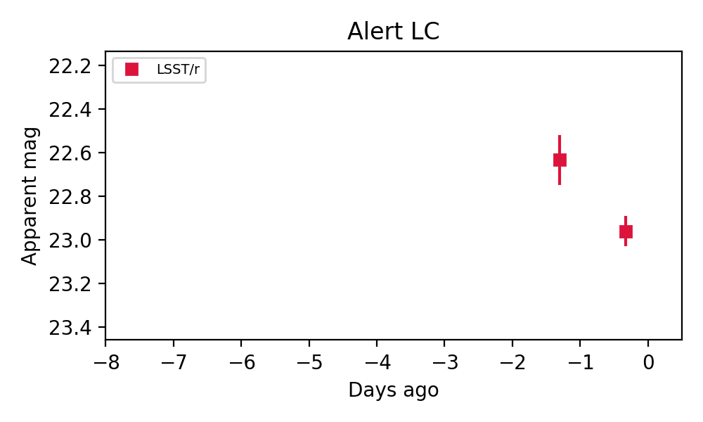
Rise Rate:
Fade Rate:
r: 0.34 mag/day
19. [LSST] 170653052072624220 (Afterglow?) [Back to Top] [Fritz Alert] [Fritz Source] [Lasair]RA, Dec: 327.51151, -9.13184 21h50m2.76s, -9d-7m-54.61sGalactic (l, b): 46.93465, -43.62403 WARNING: 3.75 deg from ecliptic plane ext(g-r) = 0.045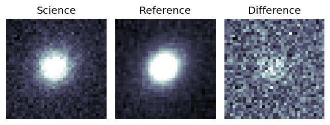
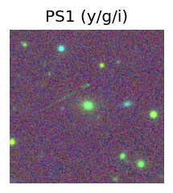
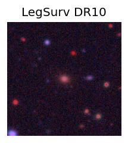
TESS: Sectors [ 42 92 116]
SDSS (<15 kpc):Found SDSS phot-z: z=0.38; peak abs mag = -19.59
PS1: 0 sources in 3 arcsec
LegacySurvey: 1 sources in 3 arcsec Closest: d = 0.13 arcsec, 187.3 deg (east of north) photoz=0.39 (68% bounds 0.34, 0.46), type=SER peak abs mag = -19.6 (68% bounds -19.22, -19.98)
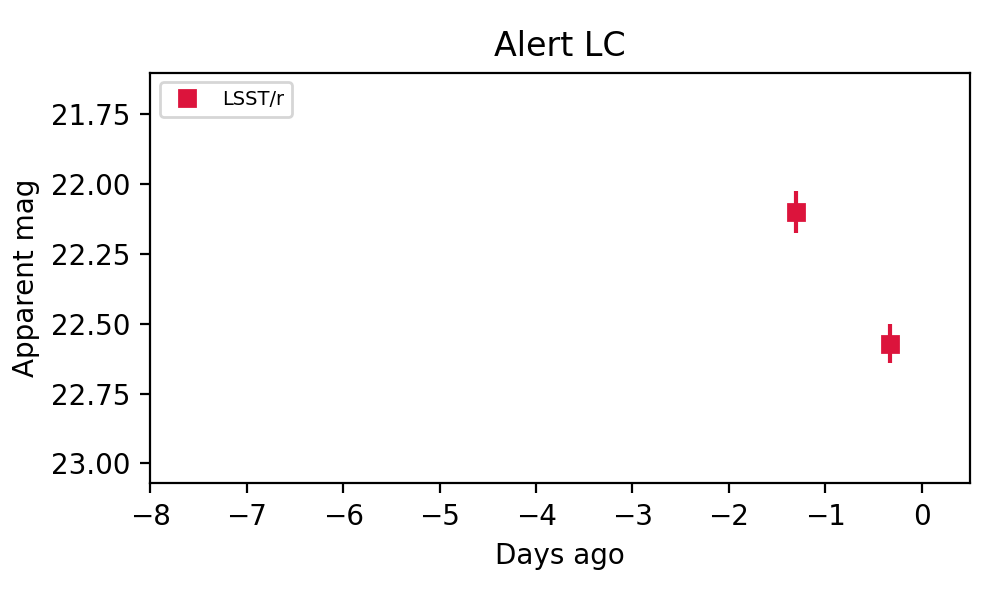
Rise Rate:
Fade Rate:
r: 0.48 mag/day